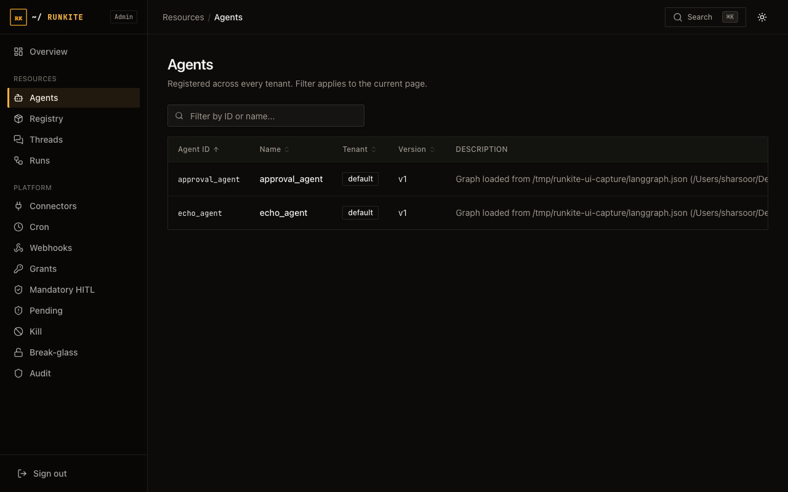
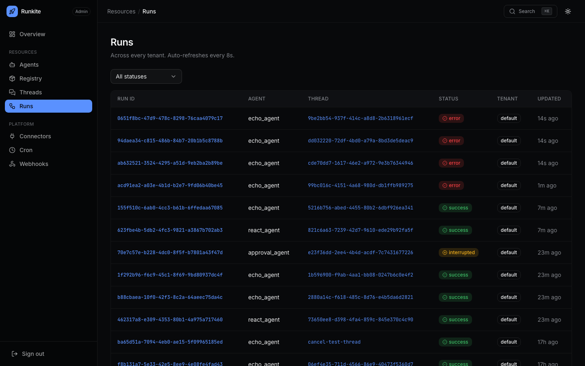

Build
Your first agent
Greenfield path: declare a graph, start plane + runner, create a thread/run, confirm it in Admin → Agents / Runs.
What it is
A runner config lists agents (graphs). The control plane does not import your Python/TS source for dispatch —
it routes jobs to runners that registered those agent_ids.
Why it is here
Enterprises need a boring happy path before adapters and governance. This is that path; migration of existing repos is separate.
How to implement
- Start from Try compose or a Supported install so
:2026is healthy. - Add a graph module and point
langgraph.jsongraphs/ agents at it (see repo examples /docs/quickstart.md). - Run the matching runner (
runkite-runneror TS) with plane addresses + runner token if auth is on. POST /threadsthenPOST /threads/{id}/runs/waitwith youragent_idand a small message payload.- Open Admin → Agents (id present) → Runs (success) → run detail event log.
# After plane + runner are up (auth off on try path)
BASE=http://localhost:2026
THREAD=$(curl -sf -X POST "$BASE/threads" -H 'Content-Type: application/json' -d '{}' | jq -r .thread_id)
curl -sf -X POST "$BASE/threads/$THREAD/runs/wait" \
-H 'Content-Type: application/json' \
-d '{"agent_id":"echo_agent","input":{"messages":[{"role":"user","content":"hello"}]}}'
In the product
Admin → Agents — your agent_id should appear once the runner registers

Admin → Runs — success / error / interrupted

What to expect
- Agent missing in Admin — runner not connected, wrong config path, or agent_id typo.
- Run stuck pending — no runner for that kind, or runner token/tenant allow-list mismatch.
- Next — connectors, grants / HITL, migrate existing agents.
Reference: Agents · Try it · docs/runners.md